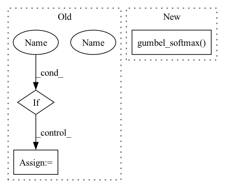

Pattern ID :1498

Before Change
// logit = torch.matmul(x / (x ** 2).sum(-1, keepdim=True), codewords / (codewords ** 2).sum(0, keepdim=True))
logit = x @ codewords
soft = (logit / temperature).softmax(-1)
if hard:
hard = logit.argmax(-1)
hard = F.one_hot(hard, k)
sample = (hard - soft).detach() + soft
else:
sample = soft
After Change
// sample = (hard - soft).detach() + soft
// else:
// sample = soft
sample = F.gumbel_softmax(logit, temperature, hard)
// sample = logit
// [h*w, N, c] <- [h*w, N, k] @ [k, C]
quantized = codebook(sample)
// quantized += torch.randn_like(quantized)
In pattern: SUPERPATTERN
Frequency: 3
Non-data size: 3
Instances
Fragment ID: 5065877
Project Name: xiaosu-zhu/mcquic
Commit Name: 163d9bc5bb4d433d52358cf5c7abc5955136f574
Time: 2021-02-25
Author: xiaosu.zhu@outlook.com
File Name: src/mcqc/models/quantizer.py
M Class Name: TransformerQuantizer
N Class Name: TransformerQuantizer
M Method Name: forward(4)
N Method Name: forward(4)
M Parent Class: nn.Module
N Parent Class: nn.Module
M File Name: src/mcqc/models/quantizer.py
N File Name: src/mcqc/models/quantizer.py
M Start Line: 286
M End Line: 315
N Start Line: 306
N End Line: 314
'>
Before Change
// [h*w, N, Cin], M * [h*w, n, k]
quantized, samples, logits = self._attention(x, temp, True)
// quantized = x
if False:
// [h*w, n, c]
posistedQuantized = self._position(quantized.reshape(h, w, n, c)).reshape(-1, n, c)
deTransformed = self._decoder(posistedQuantized).reshape(h, w, n, c).permute(2, 3, 0, 1)
else:
// [h*w, n, c] -> [n, c, h*w] -> [n, c, h, w]
deTransformed = quantized.reshape(h, w, n, c).permute(2, 3, 0, 1)
// mask = torch.rand_like(xRaw) > coeff
// mixed = mask * xRaw.detach() + torch.logical_not(mask) * deTransformed
After Change
x = self._encoder(codebook, encoderIn)
// [h*w, n, k]
logit = self._select(x)
sample = F.gumbel_softmax(logit, temp, True)
// [k, 1, c]
codewords = self._codebookEncoder(codebook)
// [h*w, n, c]
quantized = sample @ codewords[:, 0, ...]
'>
Fragment ID: 5065876
Project Name: xiaosu-zhu/mcquic
Commit Name: a4a40624c11a9779699f4a37cccb5b5ed8bc5048
Time: 2021-04-10
Author: xiaosu.zhu@outlook.com
File Name: src/mcqc/models/quantizer.py
M Class Name: TransformerQuantizer
N Class Name: TransformerQuantizer
M Method Name: forward(3)
N Method Name: forward(3)
M Parent Class: nn.Module
N Parent Class: nn.Module
M File Name: src/mcqc/models/quantizer.py
N File Name: src/mcqc/models/quantizer.py
M Start Line: 271
M End Line: 298
N Start Line: 504
N End Line: 534
'>
Before Change
// logit = prob(x, h, w)
logit = torch.matmul(x, codewords)
soft = (logit / temperature).softmax(-1)
if hard:
hard = logit.argmax(-1)
hard = F.one_hot(hard, k)
sample = (hard - soft).detach() + soft
else:
After Change
// sample = (hard - soft).detach() + soft
// else:
// sample = soft
sample = F.gumbel_softmax(logit, temperature, hard)
// sample = logit
// [h*w, N, c] <- [h*w, N, k] @ [k, C]
quantized = codebook(sample)
'>
Fragment ID: 5065874
Project Name: xiaosu-zhu/mcquic
Commit Name: c6d7994765665e47cd39abf93c83c332a5dd8426
Time: 2021-02-08
Author: xiaosu.zhu@outlook.com
File Name: src/mcqc/models/quantizer.py
M Class Name: TransformerQuantizer
N Class Name: TransformerQuantizer
M Method Name: forward(4)
N Method Name: forward(4)
M Parent Class: nn.Module
N Parent Class: nn.Module
M File Name: src/mcqc/models/quantizer.py
N File Name: src/mcqc/models/quantizer.py
M Start Line: 285
M End Line: 311
N Start Line: 300
N End Line: 308